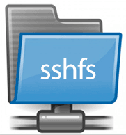

Hay momentos que estás conectado remotamente vía SSH a tu servidor, Raspberry… y aunque cada vez conoces mejor la terminal y te mueves con total soltura por los directorios 😜, te gustaría acceder a esas carpetas de un modo gráfico para hacer un copia-pega, arrastrar un archivo,… tener tu carpeta remota montada en local, como si fuera una carpeta de tu propio PC o Portátil.

Esto nos lo va a permitir SSHFS, teniendo en la máquina remota un servidor SSH montado.
SSHFS nos va a permitir montar una carpeta de un servidor, PC o Raspberry, en nuestro PC o portatíl y acceder a esta carpeta como si fuera una carpeta de nuestra PC o portátil. Para ello tenemos que seguir los siguientes pásos:
SSHFS, lo encontraremos en los repositorios de cualquier distro. En Ubuntu lo instalaremos así:
sudo apt install sshfs
En nuestro PC o portátil, crearemos una carpeta para el montaje, por ejemplo: ~/carpeta_montaje
mkdir -p ~/carpeta_montaje
Vamos a montar la carpeta del servidor que deseemos montar el local, en mi caso la carpeta llamada carpeta_delservidor, en la carpeta de mi portátil que he creado llamada carpeta_montaje.
Sustituye usuario@192.168.1.100, por el usuario e IP del servidor que te vas a conectar.
Ahora vamos a conectarnos con:
sshfs usuario@192.168.1.100:/carpeta_del_servidor ~/carpeta_montaje
En caso de haber cambiado el puerto del servidor SSH, por ejemplo al 5555, nos conectaríamos así:
sshfs -p 5555 usuario@192.168.1.100:/carpeta_del_servidor ~/carpeta_montaje
Para desmontar la carpeta, introduciremos en la terminal fusermount -u seguido de la carpeta de montaje:
fusermount -u ~/carpeta_montaje
Esta es la base de algunos de los siguientes Post donde vamos a utilizar SSHFS. Hacia tiempo que no lo utilizaba, pero la verdad es que aunque a veces puede ir un poco lento, es muy cómodo para gestionar tus archivos de un modo gráfico desde tu escritorio.
Publicado por Angel el jueves 04 abril del 2019
También te puede interesar:
Powered by org-bash-blog
Writing in orgmode whith emacs

Este obra está bajo una licencia de Creative Commons Reconocimiento-NoComercial-CompartirIgual 4.0 Internacional.